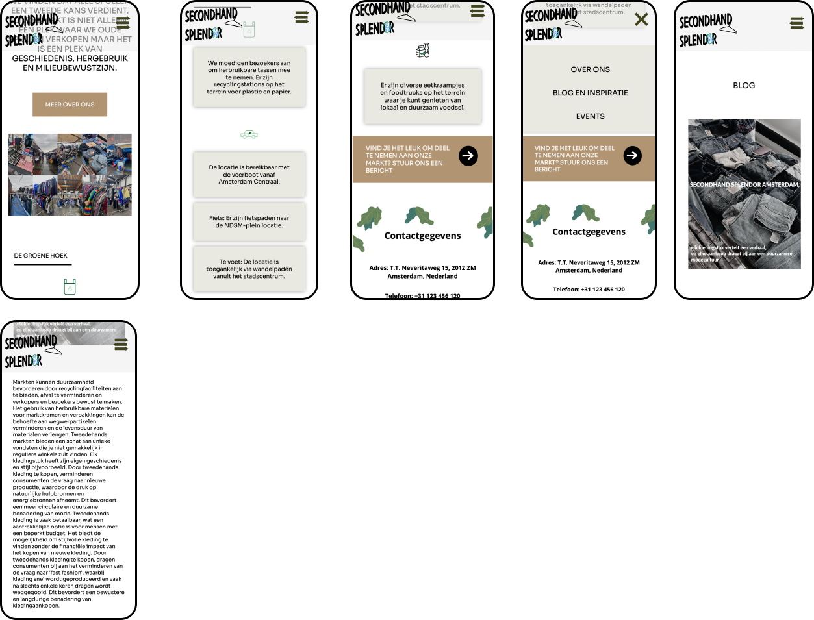
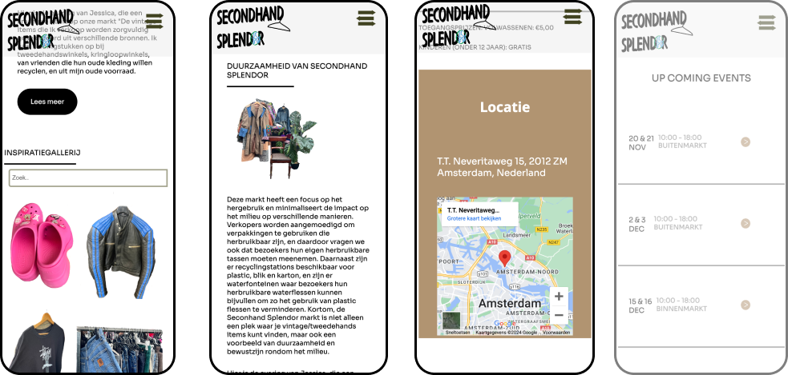

Op telefoon formaat
 In dit project heb ik een responsieve website ontworpen voor een duurzaam initiatief gericht op het promoten van groene praktijken en milieubewustzijn. De website richt zich specifiek op de duurzame praktijken van de IJ-hallen, waarbij de nadruk ligt op recycling, hergebruik en milieuvriendelijke evenementen.
In dit project heb ik een responsieve website ontworpen voor een duurzaam initiatief gericht op de IJ-Hallen, met focus op recycling, hergebruik en milieuvriendelijke evenementen. Dit was een opdracht voor de vakken Vormgeving en Internetstandaarden, waarbij ik mijn eerste website met alleen HTML en CSS heb gemaakt. Dit project leerde me een functionele en esthetische website te bouwen, volledig met HTML en CSS. Het resultaat is een mooie, gebruiksvriendelijke website die bijdraagt aan bewustwording rond duurzaamheid – een uitdaging waar ik trots op ben!